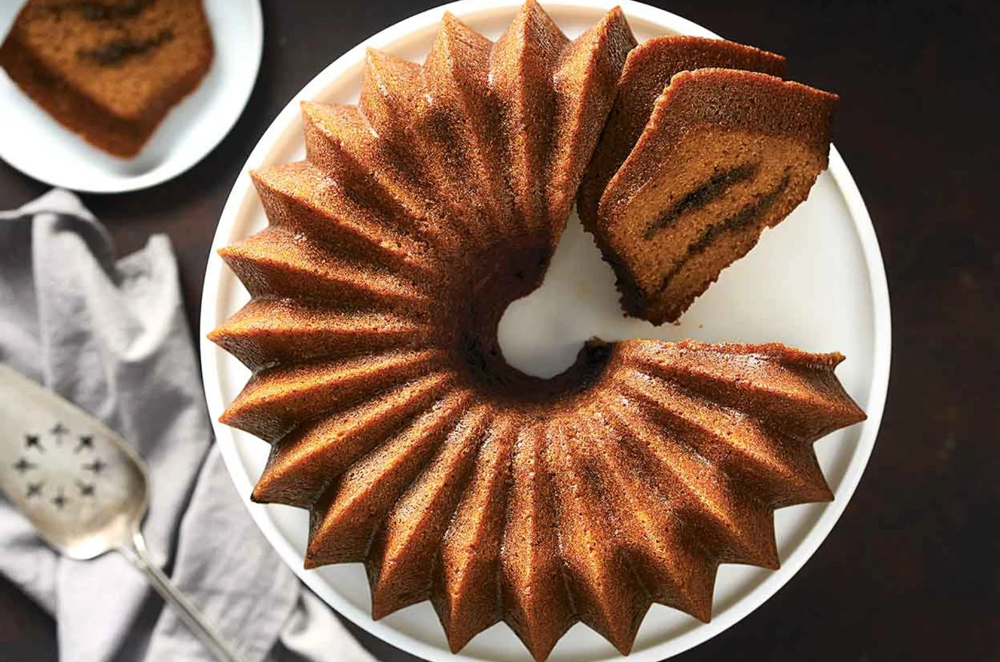

Pumpkin Espresso Bundt Cake

Description
A swirl of coffee-flavored filling pairs wonderfully well with moist, flavorful pumpkin cake in this delicious dessert, perfect for autumn.
Ingredients
Cake
- 15 oz can pumpkin puree
- 4 large eggs, at room temp
- 3/4 cup vegetable oil
- 1 cup brown sugar, packed
- 3/4 cup sugar
- 1 t vanilla extract
- 2 cups Wheat Flour
- 2 t baking powder
- 1/2 t baking soda
- 1.5 t pumpkin pie spice
- 1 t cinnamon
- 1 t salt
Filling
- 1/3 brown sugar, packed
- 1 T espresso powder
- 1/2 t cinnamon
Glaze
- 1/3 cup brewed coffee
- 1/3 cup sugar
- 1.5 T rum, optional
Steps
- Preheat the oven to 350°F.
- To make the cake: Beat together the pumpkin, eggs, oil, sugars, and vanilla extract in a large mixing bowl until well blended.
- Stir in the flour, baking powder, baking soda, spices, and salt until smooth and uniform in appearance. Set aside.
- To make the filling: Whisk together the brown sugar, cinnamon, and espresso powder in a small mixing bowl. Set aside.
- To assemble the cake: Thoroughly grease a 10-cup Bundt pan. Spoon one-third of the cake batter into the bottom of the prepared pan. Sprinkle half the filling on top. Spoon another third of the batter into the pan and sprinkle with the remaining filling. Spread the remaining batter on top, smoothing it with a spatula.
- Bake the cake for 55 to 60 minutes, or until a toothpick inserted in the center comes out clean. Remove the cake from the oven, and allow it to cool in the pan for 15 minutes before turning it out onto a rack to cool completely.
- While the cake is baking, make the glaze by whisking together the coffee, sugar, and rum. If the coffee isn't hot enough to dissolve the sugar, heat briefly, stirring until the sugar dissolves.
- Brush the glaze evenly over the cake with a pastry brush while the cake is still warm. Serve once the glaze has soaked in and dried a bit.
- Store any leftovers, well wrapped, at room temperature for several days; freeze for longer storage.